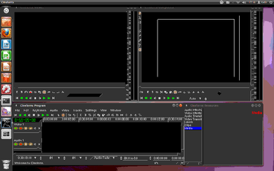
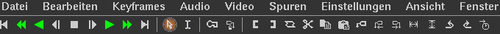

Cinelerra
Dieser Artikel wurde für die folgenden Ubuntu-Versionen getestet:
Ubuntu 16.04 Xenial Xerus
Zum Verständnis dieses Artikels sind folgende Seiten hilfreich:
Cinelerra  ist ein freies, nichtlineares Videobearbeitungsprogramm für das Betriebssystem GNU/Linux. Es wird von Heroine Virtual Ltd. entwickelt und steht unter der GNU General Public License.
ist ein freies, nichtlineares Videobearbeitungsprogramm für das Betriebssystem GNU/Linux. Es wird von Heroine Virtual Ltd. entwickelt und steht unter der GNU General Public License.
Die Hauptfunktionen der Software sind:
Capturing - Aufnehmen bzw. Aufzeichnen von Videos
Compositing - Zusammenfügen von Videos mit Übergängen und Effekten
Editieren von Audio- und Videodaten.
Das Programm unterstützt u.a. HD-Videos und 64-Bit-Audio. Es kann auch Rohdaten aus dvgrab direkt einladen. Cinelerra ist enorm leistungsfähig und wegen der Komplexität für den Gelegenheitsnutzer eher nicht zu empfehlen, weil neben Hintergrundwissen eine solide Einarbeitung notwendig ist. Wer ein Programm mit einfacher Bedienung sucht, wird sicher unter Videobearbeitung fündig.
Auf dem Code von Cinelerra aufbauend sind weitere freie Programme entstanden. Das bekannteste davon ist Cinelerra-CV als mehr auf den Heimanwender ausgerichtete Version. "CV" steht für "Community Version".
Für alle, die das Programm zuerst einmal ausprobieren möchten, gibt es verschiedene Live-DVDs . Ursprünglich als Überarbeitung gedacht, dann als eigenständiges Projekt ist die Abspaltung Lumiera zu nennen, das aber noch nicht den Alpha-Status erreicht hat.
Hinweis:
Die nachfolgende Installationsanleitung bezieht sich auf Cinelerra-CV.
Installation¶
Das Programm ist nicht Bestandteil der offiziellen Paketquellen und muss daher über ein "Personal Packages Archiv" (PPA) [1] installiert werden.
PPA¶
Adresszeile zum Hinzufügen des PPAs:
ppa:cinelerra-ppa/cinelerra-cv-stable
Hinweis!
Zusätzliche Fremdquellen können das System gefährden.
Ein PPA unterstützt nicht zwangsläufig alle Ubuntu-Versionen. Weitere Informationen sind der  PPA-Beschreibung des Eigentümers/Teams cinelerra-ppa zu entnehmen.
PPA-Beschreibung des Eigentümers/Teams cinelerra-ppa zu entnehmen.
Damit Pakete aus dem PPA genutzt werden können, müssen die Paketquellen neu eingelesen werden.
Nach dem Aktualisieren der Paketquellen kann das folgende Paket installiert werden [2]:
cinelerra-cv (ppa)
 mit apturl
mit apturl
Paketliste zum Kopieren:
sudo apt-get install cinelerra-cv
sudo aptitude install cinelerra-cv
Installation aus dem Quellcode¶
Wer es vorzieht, Cinelerra aus dem Quellcode zu installieren, kann die Anleitung How to compile CinelerraCV from source code on Ubuntu nutzen.
Bedienung¶
Programmaufruf¶
Es empfiehlt sich, Cinelerra in einem Terminal zu starten:
cinelerra
Auf diese Weise lassen sich in Problemfällen oft wichtige Fehlermeldungen entnehmen. 
Cinelerra startet mit vier separaten Fenstern:
"Hauptfenster" - dort werden eingelesene Audio- und Videospuren angezeigt und bearbeitet
"Resources Fenster" - Anzeige eingeladener Quelldateien
"Viewer Fenster" - Abspielen von Quelldateien und Anzeige der Vorschau
"Compositor Fenster"
Unter dem Menüpunkt "Fenster" kann man auswählen, welche dieser Fenster man angezeigt haben möchte. Es gibt noch "Overlays" und "Level". Und außerdem eine Funktion, alle Fenster wieder an den Standardplatz zurückzuschieben: "Standard-Positionen".
Hauptfenster¶
Das Herzstück des Programmes enthält standardmäßig:
die Menüleiste - zum Durchklicken, um sich einen Überblick zu verschaffen
eine Symbolleiste - zum Navigieren innerhalb der Zeitliste mit Setzen von Markierungen, Schnitt usw.
eine Videospur - für Bild und Videodateien
eine Audiospur - für Tondateien
eine Zeitleiste - für die Anordnung der Medien nacheinander

Die Symbolleiste besteht aus mehreren durch "|" getrennten Abschnitten:
Symbole zum Navigieren innerhalb eines Videos
Symbole zum Mauszeiger: Umschalten zwischen "Drag-and-Drop" und "Einfügen und Entfernen"
Symbole für Keyframes setzen bzw Sperren
Symbole zum Bearbeiten eines Videos: Schnittpunkte setzen, Ausschneiden usw.
Es können weitere Audio- und/oder Videospuren hinzugefügt werden.
Dateien aus "Media" im Ressourcen-Fenster können mit der Maus nach Belieben auf die passende Ton- oder Videospur im Programmfenster gezogen werden, ebenso gewünschte Effekte per Drag'n'Drop.
Projekte werden mit "Datei -> Speichern" oder "Datei -> Sichern" gespeichert, wobei ein Projekt lediglich eine Arbeitsliste darstellt, Mediendateien selbst werden nicht touchiert.
Erst durch "Rendern" wird eine neue Ausgabedatei erzeugt. Dieser Vorgang ist rechenintensiv. Standardausgabeformat von Cinelerra ist das Quicktime-Format.
Ressourcen-Fenster¶
Hier werden alle für das aktuelle Projekt eingeladenen Audio- und Videodateien angezeigt.
Im Hauptfenster wählt man unter "Datei -> Dateien laden" die gewünschten Dateien aus (mehrere mit Strg gedrückt gehalten) und klickt auf das Häkchen (atypischerweise immer links, während das Kreuz für "Verwerfen" immer rechts zu finden ist).
Wichtig: "Erzeuge neue Ressourcen" auswählen! Standard ist "Ersetze aktuelles Projekt", was alle bereits eingeladenen Dateien wieder entfernen würde.
Die eingeladenen Dateien finden sich dann im Ressourcen-Fenster. Dieses enthält links folgende Liste:
"Audio effects" - Liste verfügbarer Toneffekte
"Video effects" - Liste verfügbarer Videoeffekte
"Audio transitions" - Liste verfügbarer Tonübergänge
"Video transitions" - Liste verfügbarer Videoübergänge
"Labels" - eingeladene Beschriftungen
"Clips" - eingeladene Clips
"Media" - alle eingeladenen Dateien aus Schritt 1
Viewer-Fenster¶
Dieses Fenster erlaubt es, eingeladene Dateien anzuschauen, ohne dass sie in das Projekt im Hauptfenster eingeladen sein müssen.
Compositor-Fenster¶
In diesem Fenster kann man die Wirkung eingestellter Effekte oder Übergange sich anzeigen lassen und Änderungen/Anpassungen vornehmen. Ganz links unten findet sich ein Schlüsselsymbol, mit welchem "Keyframes" gesetzt werden können. Je mehr, desto genauer wird kodiert.
Rendern¶
Mit Rendern ist gemeint, das projektierte Video tatsächlich zu erzeugen und als Datei zu speichern. Zuerst sollte man unter "Einstellungen -> Format" überprüfen, ob die Voreinstellungen für die Ausgabe passend sind. Eingestellt sind:
48 kHz Audio
2-Kanal-Audio
25 Bilder/Sek.
Bildgröße: 720 x 576
Farbtiefe: YUVA-8 Bit
Seitenverhältnis: 4:3
Hier kann man außerdem ein Häkchen bei "Automatisch" setzen, um sich dem Quellformat anzupassen.
Dann geht man auf "Datei -> Rendern", gibt den gewünschten Dateinamen ein, wählt unter "Ausgabeformat" "OGG Theora / Vorbis" und setzt Häkchen sowohl bei "Video" als auch bei "Audio". Schließlich noch "Nichts einsetzen" auswählen.
Anleitungen¶
Ausführliche Anleitungen zu Cinelerra-CV und verschiedene Video-Anleitungen, Tutorials und Einsteiger-Videos auf cinelerra-cv.org .
Problembehebung¶
Zu wenig Speicher¶
Die eventuell beim ersten Startvorgang vorkommende Fehlermeldung:
void MWindow::init_shm0: WARNING:/proc/sys/kernel/shmmax is 0x2000000, which is too low. Before running Cinelerra do the following as root: echo "0x7ffffff">/proc/sys/kernel/shmmax
lässt sich durch folgenden Befehl beheben:
sudo sysctl -w kernel.shmmax=0x7fffffff
Umgang mit Codecs¶
Empfehlenswerte Einstellungen für Ausgabekontainer und Codecs sind:
OGG-Container:
Videocodec: Theora
Audiocodec: Vorbis
Bei MOV-Container (Quicktime) gibt es mehrere Möglichkeiten:
Videocodec: H.264, Audiocodec: MP3 oder MPEG4
Videocodec: MPEG-4, Audiocodec: MP3 oder MPEG4
Videocodec: JPEG, Audiocodec: MPEG4
Videocodec: Motion-JPEG, Audiocodec: MPEG4
Details finden sich im Cinelerra-Wiki .
Falls man andere Formate benötigt, wird es vermutlich besser sein, diese nachträglich umzuwandeln.
Fehlermeldung über fehlende Codecs im Terminal lauten z.B.:
new_vcodec: couldn't find codec for "H264" new_vcodec: couldn't find codec for "xvid" new_vcodec: couldn't find codec for "FMP4"
Ein allgemeiner Workaround zur Ergänzung dieser häufig verwendeten Codecs in Cinelerra fehlt noch - daher kann momentan leider (nur) das Konvertieren mittels hdffxvrt-Skript empfohlen werden.
Ton und Bild asynchron¶
Falls beim Abspielen im Viewer Bild und Ton asynchron sind, hilft es, unter "Einstellungen -> Einstellungen -> Abspielen" das Häkchen bei "Jeden Frame abspielen" zu entfernen. Alternativ kann dort ein "Audio-Versatz" angegeben werden (siehe Cinelerra - Ton und Bild asynchron).
Anscheinend ist das MPEG-Format beim Synchronisieren nicht sehr stabil (Quelle  ). Daher empfiehlt sich ein anderer Codec (oder unkomprimiert zu rendern und erst nachträglich zu komprimieren).
). Daher empfiehlt sich ein anderer Codec (oder unkomprimiert zu rendern und erst nachträglich zu komprimieren).
Links¶
Cinelerra - Wikipedia
Videoschnitt mit Cinerella
 - Linux-User, 04/2006
- Linux-User, 04/2006Making a DVD with your own digital video material
- Blogbeitrag, 01/2005Videobearbeitung
- Forendiskussion

- Erstellt mit Inyoka
-
 2004 – 2017 ubuntuusers.de • Einige Rechte vorbehalten
2004 – 2017 ubuntuusers.de • Einige Rechte vorbehalten
Lizenz • Kontakt • Datenschutz • Impressum • Serverstatus -
Serverhousing gespendet von